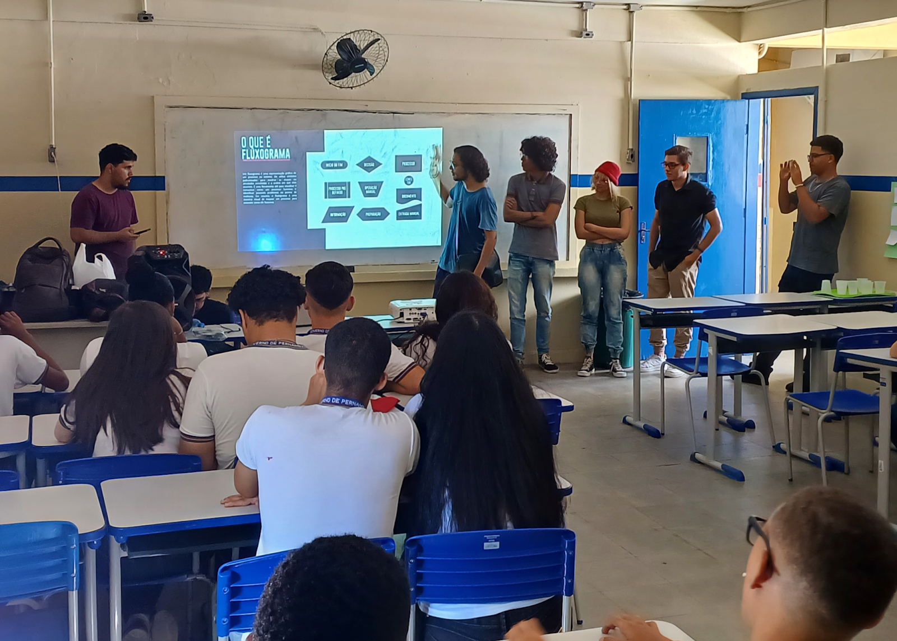

Somos mais que uma equipe,
somos amigos!

A grande parte da nossa equipe se conheceu no primeiro
período da faculdade, mas a primeira formação do que
já se chamava DeadSec ocorreu no interdisciplinar de abril
de 2023. Naquela época, o grupo era formado por 22 pessoas
e liderado por Raif Brito, conhecido pelo codinome "RB".
A DeadSec, inicialmente, era apenas um grupo universitário
de pessoas que precisavam de nota para passar na matéria
de Lógica de Programação, ministrada pela professora
Ameliara Freire. O projeto desse período consistia em
uma apresentação sobre programação desplugada para
uma escola ou ONG, explicando do que se tratava o assunto
Com o fim do interdisciplinar, a equipe foi reduzida,
permanecendo apenas aqueles que gostavam da "vibe" uns
dos outros. A segunda formação da equipe ocorreu no
interdisciplinar do segundo período, em outubro de 2023.
Essa foi a última formação comandada por RB. Já contava
com a maioria dos membros atuais: Alexandre de Araújo,
Anthony Gabriel, Deyvison Henrique, Elias Souza,
Guilherme Alves Dantas, Irlan Ferreira, Milenna Victória,
Ruan Spinelli, William Landelino, e o atual líder
Guilherme Braga. Muitos desses nomes já estavam
presentes na primeira formação, mas ganharam
mais destaque na segunda.
Nesse período, começamos a perceber nossas capacidades
como desenvolvedores. Durante o interdisciplinar, foi
proposto pelo professor Ismael Rodrigues que
produzíssemos um protótipo de site ou aplicativo. A DeadSec
trabalhou na produção do website da PetSec (para mais
informações sobre a PetSec, visite a área "Projetos" do site).

O período que realmente transformou e consolidou a
equipe como um grupo de desenvolvimento de qualidade
foi o terceiro. No terceiro período, tivemos a formação
mais completa dos tempos atuais: Raif Nascimento
de Brito, William Landelino Félix Martins, Alexandre
de Araújo Gomes da Silva Filho, Carlos Vinícius de Lima
Ferreira, Deyvison Henrique Dantas da Silva, Elias
Souza Araújo Júnior, Guilherme Alves Dantas Nacre,
Irlan Ferreira da Silva, Ruan Spinelli de Oliveira,
João Victor do Amaral Reis Cavalcante, Adryan Arthur
da Silva Oliveira, Anthony Gabriel Leôncio da Silva,
Milenna Victória Barbosa da Costa, agora sob a liderança
de Guilherme Braga, que assumiu após Raif Brito passar
o manto por falta de tempo.
Nessa formação, o grupo foi subdividido em três partes:
documentação, desenvolvimento e testes, cada subgrupo sob
o comando de seus líderes que estao sob o comando do
lider geral, todos unidos para a produção de um website
para o Centro de Diagnóstico Clinicor. Após esse
interdisciplinar, a DeadSec se propôs a desenvolver outros
projetos como equipe e continua ativa até os tempos atuais.